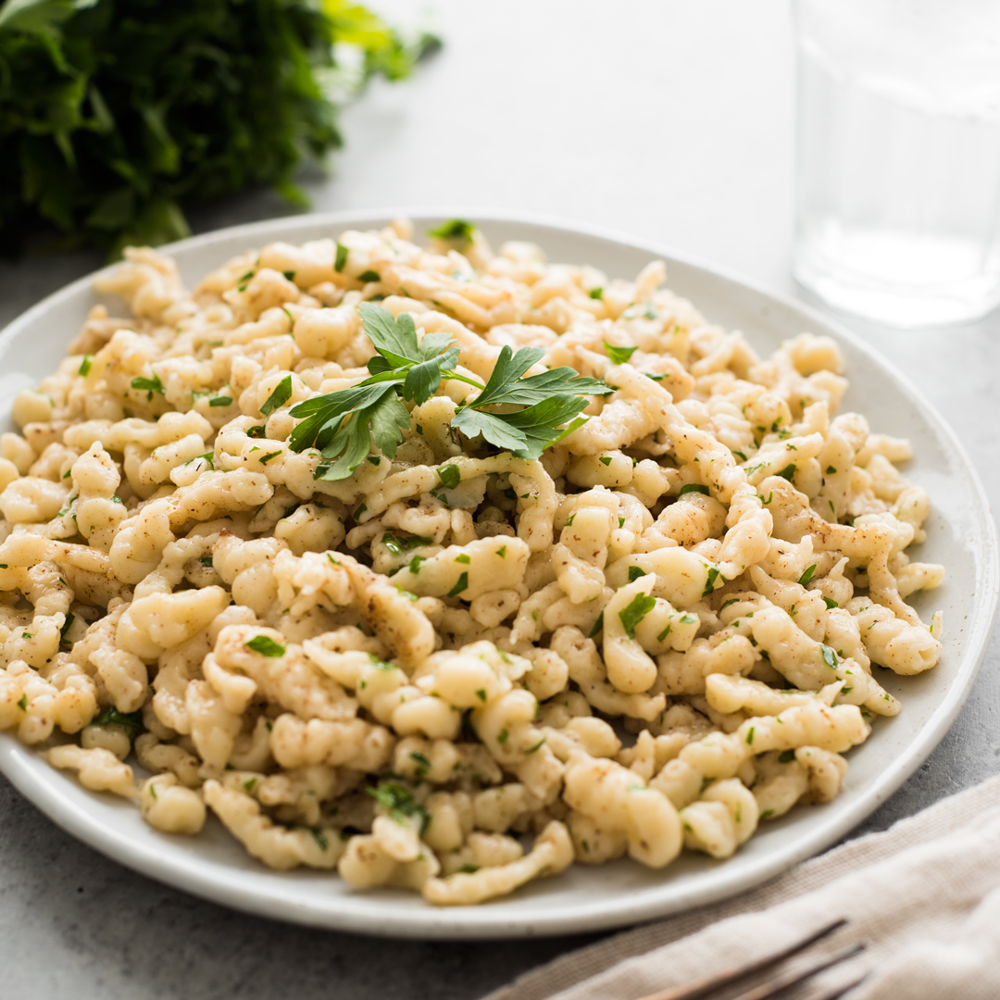

SPAETZLE
Western Dish (Germany)

Takes 30 minutes
Makes 6 servings
MAIN DISH
Ingredients
- 1 cup all-purpose flour
- 1/4 cup milk
- 2 eggs
- 1/2 teaspoon ground nutmeg
- 1 pinch freshly ground white pepper
- 1/2 teaspoon salt
- 1 gallon hot water
- 2 tablespoons butter
- 2 tablespoons chopped fresh parsley
Instruction
- 1. Mix together flour, salt, white pepper, and nutmeg. Beat eggs well, and add alternately with the milk to the dry ingredients. Mix until smooth.
- 2. Press dough through spaetzle maker, or a large holed sieve or metal grater.
- 3. Drop a few at a time into simmering liquid. Cook 5 to 8 minutes. Drain well.
- 4. Saute cooked spaetzle in butter or margarine. Sprinkle chopped fresh parsley on top, and serve.
SOURCE : www.allrecipes.com
Add to Cart
want to try this recipe? order ingredients now!